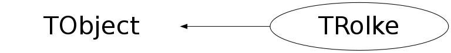

class TRolke: public TObject
TRolke This class computes confidence intervals for the rate of a Poisson process in the presence of uncertain background and/or efficiency. The treatment and the resulting limits are fully frequentist. The limit calculations make use of the profile likelihood method. Author: Jan Conrad (CERN) 2004 Updated: Johan Lundberg (CERN) 2009 Copyright CERN 2004,2009 Jan.Conrad@cern.ch, Johan.Lundberg@cern.ch For a full list of methods and their syntax, and build instructions, consult the header file TRolke.h. Examples/tutorials are found in the separate file Rolke.C TRolke implements the following Models The signal is always assumed to be Poisson, with the following combinations of models of background and detection efficiency: If unsure, first consider model 3, 4 or 5. 1: SetPoissonBkgBinomEff(x,y,z,tau,m) Background: Poisson Efficiency: Binomial when the background is simultaneously measured from sidebands (or MC), and the signal efficiency was determined from Monte Carlo 2: SetPoissonBkgGaussEff(x,y,em,sde,tau) Background: Poisson Efficiency: Gaussian when the background is simultaneously measured from sidebands (or MC), and the efficiency is modeled as Gaussian 3: SetGaussBkgGaussEff(x,bm,em,sde,sdb) Background: Gaussian Efficiency: Gaussian when background and efficiency can both be modeled as Gaussian. 4: SetPoissonBkgKnownEff(x,y,tau,e) Background: Poisson Efficiency: Known when the background is simultaneously measured from sidebands (or MC). 5: SetGaussBkgKnownEff(x,bm,sdb,e) Background: Gaussian Efficiency: Known when background is Gaussian 6: SetKnownBkgBinomEff(x,z,b,m) Background: Known Efficiency: Binomial when signal efficiency was determined from Monte Carlo 7: SetKnownBkgGaussEff(x,em,sde,b) Background: Known Efficiency: Gaussian when background is known and efficiency Gaussian Parameters and further explanation For all models: x = number of observed events in the experiment Efficiency (e or em) is the detection probability for signal. A low efficiency hence generally means weaker limits. If the efficiency of an experiment (with analysis cuts) is dealt with elsewhere, em or e can be set to one. For Poisson background measurements (sideband or MC): y = number of observed events in background region tau = Either: the ratio between signal and background region in case background is observed. Or: the ratio between observed and simulated live-time in case background is determined from MC. For Gaussian efficiency or background: bm = estimate of the background sdb = corresponding standard deviation em = estimate of the efficiency sde = corresponding standard deviation If the efficiency scale of dealt with elsewhere, set em to 1 and sde to the relative uncertainty. For Binomial signal efficiency: m = number of MC events generated z = number of MC events observed For the case of known background expectation or known efficiency: e = true efficiency (considered known) b = background expectation value (considered known) The confidence level (CL) is set either at construction time or with either of SetCL or SetCLSigmas The TRolke method is very similar to the one used in MINUIT (MINOS). Two options are offered to deal with cases where the maximum likelihood estimate (MLE) is not in the physical region. Version "bounded likelihood" is the one used by MINOS if bounds for the physical region are chosen. Unbounded likelihood (the default) allows the MLE to be in the unphysical region. It has however better coverage. For more details consult the reference (see below). For a description of the method and its properties: W.Rolke, A. Lopez, J. Conrad and Fred James "Limits and Confidence Intervals in presence of nuisance parameters" http://lanl.arxiv.org/abs/physics/0403059 Nucl.Instrum.Meth.A551:493-503,2005 Should I use TRolke, TFeldmanCousins, TLimit? 1. Does TRolke make TFeldmanCousins obsolete? Certainly not. TFeldmanCousins is the fully frequentist construction and should be used in case of no (or negligible) uncertainties. It is however not capable of treating uncertainties in nuisance parameters. In other words, it does not handle background expectations or signal efficiencies which are known only with some limited accuracy. TRolke is designed for this case and it is shown in the reference above that it has good coverage properties for most cases, and can be used where FeldmannCousins can't. 2. What are the advantages of TRolke over TLimit? TRolke is fully frequentist. TLimit treats nuisance parameters Bayesian. For a coverage study of a Bayesian method refer to physics/0408039 (Tegenfeldt & J.C). However, this note studies the coverage of Feldman&Cousins with Bayesian treatment of nuisance parameters. To make a long story short: using the Bayesian method you might introduce a small amount of over-coverage (though I haven't shown it for TLimit). On the other hand, coverage of course is a not so interesting when you consider yourself a Bayesian.
Function Members (Methods)
public:
| TRolke(const TRolke&) | |
| TRolke(Double_t CL = 0.9, Option_t* option = "") | |
| virtual | ~TRolke() |
| void | TObject::AbstractMethod(const char* method) const |
| virtual void | TObject::AppendPad(Option_t* option = "") |
| virtual void | TObject::Browse(TBrowser* b) |
| Double_t | CalculateInterval(Int_t x, Int_t y, Int_t z, Double_t bm, Double_t em, Double_t e, Int_t mid, Double_t sde, Double_t sdb, Double_t tau, Double_t b, Int_t m) |
| static TClass* | Class() |
| virtual const char* | TObject::ClassName() const |
| virtual void | TObject::Clear(Option_t* = "") |
| virtual TObject* | TObject::Clone(const char* newname = "") const |
| virtual Int_t | TObject::Compare(const TObject* obj) const |
| virtual void | TObject::Copy(TObject& object) const |
| virtual void | TObject::Delete(Option_t* option = "")MENU |
| virtual Int_t | TObject::DistancetoPrimitive(Int_t px, Int_t py) |
| virtual void | TObject::Draw(Option_t* option = "") |
| virtual void | TObject::DrawClass() constMENU |
| virtual TObject* | TObject::DrawClone(Option_t* option = "") constMENU |
| virtual void | TObject::Dump() constMENU |
| virtual void | TObject::Error(const char* method, const char* msgfmt) const |
| virtual void | TObject::Execute(const char* method, const char* params, Int_t* error = 0) |
| virtual void | TObject::Execute(TMethod* method, TObjArray* params, Int_t* error = 0) |
| virtual void | TObject::ExecuteEvent(Int_t event, Int_t px, Int_t py) |
| virtual void | TObject::Fatal(const char* method, const char* msgfmt) const |
| virtual TObject* | TObject::FindObject(const char* name) const |
| virtual TObject* | TObject::FindObject(const TObject* obj) const |
| bool | GetBounding() const |
| Double_t | GetCL() const |
| bool | GetCriticalNumber(Int_t& ncrit, Int_t maxtry = -1) |
| virtual Option_t* | TObject::GetDrawOption() const |
| static Long_t | TObject::GetDtorOnly() |
| virtual const char* | TObject::GetIconName() const |
| bool | GetLimits(Double_t& low, Double_t& high) |
| bool | GetLimitsML(Double_t& low, Double_t& high, Int_t& out_x) |
| bool | GetLimitsQuantile(Double_t& low, Double_t& high, Int_t& out_x, Double_t integral = 0.5) |
| Double_t | GetLowerLimit() |
| virtual const char* | TObject::GetName() const |
| virtual char* | TObject::GetObjectInfo(Int_t px, Int_t py) const |
| static Bool_t | TObject::GetObjectStat() |
| virtual Option_t* | TObject::GetOption() const |
| bool | GetSensitivity(Double_t& low, Double_t& high, Double_t pPrecision = 0.00001) |
| virtual const char* | TObject::GetTitle() const |
| virtual UInt_t | TObject::GetUniqueID() const |
| Double_t | GetUpperLimit() |
| virtual Bool_t | TObject::HandleTimer(TTimer* timer) |
| virtual ULong_t | TObject::Hash() const |
| virtual void | TObject::Info(const char* method, const char* msgfmt) const |
| virtual Bool_t | TObject::InheritsFrom(const char* classname) const |
| virtual Bool_t | TObject::InheritsFrom(const TClass* cl) const |
| virtual void | TObject::Inspect() constMENU |
| void | TObject::InvertBit(UInt_t f) |
| virtual TClass* | IsA() const |
| virtual Bool_t | TObject::IsEqual(const TObject* obj) const |
| virtual Bool_t | TObject::IsFolder() const |
| Bool_t | TObject::IsOnHeap() const |
| virtual Bool_t | TObject::IsSortable() const |
| Bool_t | TObject::IsZombie() const |
| virtual void | TObject::ls(Option_t* option = "") const |
| void | TObject::MayNotUse(const char* method) const |
| virtual Bool_t | TObject::Notify() |
| void | TObject::Obsolete(const char* method, const char* asOfVers, const char* removedFromVers) const |
| static void | TObject::operator delete(void* ptr) |
| static void | TObject::operator delete(void* ptr, void* vp) |
| static void | TObject::operator delete[](void* ptr) |
| static void | TObject::operator delete[](void* ptr, void* vp) |
| void* | TObject::operator new(size_t sz) |
| void* | TObject::operator new(size_t sz, void* vp) |
| void* | TObject::operator new[](size_t sz) |
| void* | TObject::operator new[](size_t sz, void* vp) |
| TRolke& | operator=(const TRolke&) |
| virtual void | TObject::Paint(Option_t* option = "") |
| virtual void | TObject::Pop() |
| virtual void | Print(Option_t*) const |
| virtual Int_t | TObject::Read(const char* name) |
| virtual void | TObject::RecursiveRemove(TObject* obj) |
| void | TObject::ResetBit(UInt_t f) |
| virtual void | TObject::SaveAs(const char* filename = "", Option_t* option = "") constMENU |
| virtual void | TObject::SavePrimitive(ostream& out, Option_t* option = "") |
| void | TObject::SetBit(UInt_t f) |
| void | TObject::SetBit(UInt_t f, Bool_t set) |
| void | SetBounding(const bool bnd) |
| void | SetCL(Double_t CL) |
| void | SetCLSigmas(Double_t CLsigmas) |
| virtual void | TObject::SetDrawOption(Option_t* option = "")MENU |
| static void | TObject::SetDtorOnly(void* obj) |
| void | SetGaussBkgGaussEff(Int_t x, Double_t bm, Double_t em, Double_t sde, Double_t sdb) |
| void | SetGaussBkgKnownEff(Int_t x, Double_t bm, Double_t sdb, Double_t e) |
| void | SetKnownBkgBinomEff(Int_t x, Int_t z, Int_t m, Double_t b) |
| void | SetKnownBkgGaussEff(Int_t x, Double_t em, Double_t sde, Double_t b) |
| static void | TObject::SetObjectStat(Bool_t stat) |
| void | SetPoissonBkgBinomEff(Int_t x, Int_t y, Int_t z, Double_t tau, Int_t m) |
| void | SetPoissonBkgGaussEff(Int_t x, Int_t y, Double_t em, Double_t tau, Double_t sde) |
| void | SetPoissonBkgKnownEff(Int_t x, Int_t y, Double_t tau, Double_t e) |
| void | SetSwitch(bool bnd) |
| virtual void | TObject::SetUniqueID(UInt_t uid) |
| virtual void | ShowMembers(TMemberInspector& insp) |
| virtual void | Streamer(TBuffer& b) |
| void | StreamerNVirtual(TBuffer& b) |
| virtual void | TObject::SysError(const char* method, const char* msgfmt) const |
| Bool_t | TObject::TestBit(UInt_t f) const |
| Int_t | TObject::TestBits(UInt_t f) const |
| virtual void | TObject::UseCurrentStyle() |
| virtual void | TObject::Warning(const char* method, const char* msgfmt) const |
| virtual Int_t | TObject::Write(const char* name = 0, Int_t option = 0, Int_t bufsize = 0) |
| virtual Int_t | TObject::Write(const char* name = 0, Int_t option = 0, Int_t bufsize = 0) const |
protected:
| virtual void | TObject::DoError(int level, const char* location, const char* fmt, va_list va) const |
| void | TObject::MakeZombie() |
private:
Data Members
public:
| enum TObject::EStatusBits { | kCanDelete | |
| kMustCleanup | ||
| kObjInCanvas | ||
| kIsReferenced | ||
| kHasUUID | ||
| kCannotPick | ||
| kNoContextMenu | ||
| kInvalidObject | ||
| }; | ||
| enum TObject::[unnamed] { | kIsOnHeap | |
| kNotDeleted | ||
| kZombie | ||
| kBitMask | ||
| kSingleKey | ||
| kOverwrite | ||
| kWriteDelete | ||
| }; |
private:
| bool | fBounding | false for unbounded likelihood |
| Double_t | fCL | confidence level as a fraction [0.9 for 90% ] |
| Double_t | fLowerLimit | the calculated lower limit |
| Int_t | fNumWarningsDeprecated1 | |
| Int_t | fNumWarningsDeprecated2 | |
| Double_t | fUpperLimit | the calculated upper limit |
| Double_t | f_b | |
| Double_t | f_bm | |
| Double_t | f_e | |
| Double_t | f_em | |
| Int_t | f_m | |
| Int_t | f_mid | |
| Double_t | f_sdb | |
| Double_t | f_sde | |
| Double_t | f_tau | |
| Int_t | f_x | |
| Int_t | f_y | |
| Int_t | f_z |
Class Charts
{kind=link}
{kind=link}
{kind=link}
{kind=link}

Function documentation
TRolke(Double_t CL = 0.9, Option_t* option = "")
constructor with optional Confidence Level argument. 'option' is not used.
~TRolke()
void SetPoissonBkgBinomEff(Int_t x, Int_t y, Int_t z, Double_t tau, Int_t m)
Model 1: Background - Poisson, Efficiency - Binomial
x : number of observed events in the experiment
y : number of observed events in background region
z : number of MC events observed
tau : ratio parameter (read TRolke.cxx for details)
m : number of MC events generated
void SetPoissonBkgGaussEff(Int_t x, Int_t y, Double_t em, Double_t tau, Double_t sde)
Model 2: Background - Poisson, Efficiency - Gaussian
x : number of observed events in the experiment
y : number of observed events in background region
em : estimate of the efficiency
tau : ratio parameter (read TRolke.cxx for details)
sde : efficiency estimate's standard deviation
void SetGaussBkgGaussEff(Int_t x, Double_t bm, Double_t em, Double_t sde, Double_t sdb)
Model 3: Background - Gaussian, Efficiency - Gaussian (x,bm,em,sde,sdb)
x : number of observed events in the experiment
bm : estimate of the background
em : estimate of the efficiency
sde : efficiency estimate's standard deviation
sdb : background estimate's standard deviation
void SetPoissonBkgKnownEff(Int_t x, Int_t y, Double_t tau, Double_t e)
void SetGaussBkgKnownEff(Int_t x, Double_t bm, Double_t sdb, Double_t e)
Model 5: Background - Gaussian, Efficiency - known (x,bm,sdb,e
x : number of observed events in the experiment
bm : estimate of the background
sdb : background estimate's standard deviation
e : true efficiency (considered known)
void SetKnownBkgBinomEff(Int_t x, Int_t z, Int_t m, Double_t b)
Model 6: Background - known, Efficiency - Binomial (x,z,m,b)
x : number of observed events in the experiment
z : number of MC events observed
m : number of MC events generated
b : background expectation value (considered known)
void SetKnownBkgGaussEff(Int_t x, Double_t em, Double_t sde, Double_t b)
Model 7: Background - known, Efficiency - Gaussian (x,em,sde,b)
x : number of observed events in the experiment
em : estimate of the efficiency
sde : efficiency estimate's standard deviation
b : background expectation value (considered known)
bool GetLimits(Double_t& low, Double_t& high)
Calculate and get the upper and lower limits for the pre-specified model
Double_t GetBackground()
Return a simple background value (estimate/truth) given the pre-specified model
bool GetSensitivity(Double_t& low, Double_t& high, Double_t pPrecision = 0.00001)
get the upper and lower average limits based on the specified model. No uncertainties are considered for the Poisson weights in the averaging sum
bool GetLimitsQuantile(Double_t& low, Double_t& high, Int_t& out_x, Double_t integral = 0.5)
get the upper and lower limits for the outcome corresponding to a given quantile. For integral=0.5 this gives the median limits in repeated experiments. The returned out_x is the corresponding (e.g. median) value of x. No uncertainties are considered for the Poisson weights when calculating the Poisson integral
bool GetLimitsML(Double_t& low, Double_t& high, Int_t& out_x)
get the upper and lower limits for the most likely outcome. The returned out_x is the corresponding value of x No uncertainties are considered for the Poisson weights when finding ML
bool GetCriticalNumber(Int_t& ncrit, Int_t maxtry = -1)
get the value of x corresponding to rejection of the null hypothesis. This means a lower limit >0 with the pre-specified Confidence Level. Optionally give maxtry; the maximum value of x to try. Of not, or if maxtry<0 an automatic mode is used.
Double_t CalculateInterval(Int_t x, Int_t y, Int_t z, Double_t bm, Double_t em, Double_t e, Int_t mid, Double_t sde, Double_t sdb, Double_t tau, Double_t b, Int_t m)
Deprecated and error prone model selection interface.
It's use is trongly discouraged. 'mid' is the model ID (1 to 7).
This method is provided for backwards compatibility/developer use only.
x : number of observed events in the experiment
y : number of observed events in background region
z : number of MC events observed
bm : estimate of the background
em : estimate of the efficiency
e : true efficiency (considered known)
mid : internal model id (really, you should not use this method at all)
sde : efficiency estimate's standard deviation
sdb : background estimate's standard deviation
tau : ratio parameter (read TRolke.cxx for details)
b : background expectation value (considered known)
m : number of MC events generated
void SetModelParameters(Int_t x, Int_t y, Int_t z, Double_t bm, Double_t em, Double_t e, Int_t mid, Double_t sde, Double_t sdb, Double_t tau, Double_t b, Int_t m)
x : number of observed events in the experiment
y : number of observed events in background region
z : number of MC events observed
bm : estimate of the background
em : estimate of the efficiency
e : true efficiency (considered known)
mid : internal model id
sde : efficiency estimate's standard deviation
sdb : background estimate's standard deviation
tau : ratio parameter (read TRolke.cxx for details)
b : background expectation value (considered known)
m : number of MC events generated
Double_t ComputeInterval(Int_t x, Int_t y, Int_t z, Double_t bm, Double_t em, Double_t e, Int_t mid, Double_t sde, Double_t sdb, Double_t tau, Double_t b, Int_t m)
ComputeInterval, the internals. x : number of observed events in the experiment y : number of observed events in background region z : number of MC events observed bm : estimate of the background em : estimate of the efficiency e : true efficiency (considered known) mid : internal model id (really, you should not use this method at all) sde : efficiency estimate's standard deviation sdb : background estimate's standard deviation tau : ratio parameter (read TRolke.cxx for details) b : background expectation value (considered known) m : number of MC events generated
Double_t Interval(Int_t x, Int_t y, Int_t z, Double_t bm, Double_t em, Double_t e, Int_t mid, Double_t sde, Double_t sdb, Double_t tau, Double_t b, Int_t m)
Internal helper function 'Interval' x : number of observed events in the experiment y : number of observed events in background region z : number of MC events observed bm : estimate of the background em : estimate of the efficiency e : true efficiency (considered known) mid : internal model id (really, you should not use this method at all) sde : efficiency estimate's standard deviation sdb : background estimate's standard deviation tau : ratio parameter (read TRolke.cxx for details) b : background expectation value (considered known) m : number of MC events generated
Double_t Likelihood(Double_t mu, Int_t x, Int_t y, Int_t z, Double_t bm, Double_t em, Int_t mid, Double_t sde, Double_t sdb, Double_t tau, Double_t b, Int_t m, Int_t what)
Internal helper function Chooses between the different profile likelihood functions to use for the different models. Returns evaluation of the profile likelihood functions.
Double_t EvalLikeMod1(Double_t mu, Int_t x, Int_t y, Int_t z, Double_t tau, Int_t m, Int_t what)
Calculates the Profile Likelihood for MODEL 1: Poisson background/ Binomial Efficiency what = 1: Maximum likelihood estimate is returned what = 2: Profile Likelihood of Maximum Likelihood estimate is returned. what = 3: Profile Likelihood of Test hypothesis is returned otherwise parameters as described in the beginning of the class)
Double_t LikeMod1(Double_t mu, Double_t b, Double_t e, Int_t x, Int_t y, Int_t z, Double_t tau, Int_t m)
Profile Likelihood function for MODEL 1: Poisson background/ Binomial Efficiency
void ProfLikeMod1(Double_t mu, Double_t& b, Double_t& e, Int_t x, Int_t y, Int_t z, Double_t tau, Int_t m)
Helper for calculation of estimates of efficiency and background for model 1
Double_t LikeGradMod1(Double_t e, Double_t mu, Int_t x, Int_t y, Int_t z, Double_t tau, Int_t m)
gradient model likelihood
Double_t EvalLikeMod2(Double_t mu, Int_t x, Int_t y, Double_t em, Double_t sde, Double_t tau, Int_t what)
Calculates the Profile Likelihood for MODEL 2: Poisson background/ Gauss Efficiency what = 1: Maximum likelihood estimate is returned what = 2: Profile Likelihood of Maximum Likelihood estimate is returned. what = 3: Profile Likelihood of Test hypothesis is returned otherwise parameters as described in the beginning of the class)
Double_t LikeMod2(Double_t mu, Double_t b, Double_t e, Int_t x, Int_t y, Double_t em, Double_t tau, Double_t v)
Profile Likelihood function for MODEL 2: Poisson background/Gauss Efficiency
Double_t EvalLikeMod3(Double_t mu, Int_t x, Double_t bm, Double_t em, Double_t sde, Double_t sdb, Int_t what)
Calculates the Profile Likelihood for MODEL 3: Gauss background/ Gauss Efficiency what = 1: Maximum likelihood estimate is returned what = 2: Profile Likelihood of Maximum Likelihood estimate is returned. what = 3: Profile Likelihood of Test hypothesis is returned otherwise parameters as described in the beginning of the class)
Double_t LikeMod3(Double_t mu, Double_t b, Double_t e, Int_t x, Double_t bm, Double_t em, Double_t u, Double_t v)
Profile Likelihood function for MODEL 3: Gauss background/Gauss Efficiency
Double_t EvalLikeMod4(Double_t mu, Int_t x, Int_t y, Double_t tau, Int_t what)
Calculates the Profile Likelihood for MODEL 4: Poiss background/Efficiency known what = 1: Maximum likelihood estimate is returned what = 2: Profile Likelihood of Maximum Likelihood estimate is returned. what = 3: Profile Likelihood of Test hypothesis is returned otherwise parameters as described in the beginning of the class)
Double_t LikeMod4(Double_t mu, Double_t b, Int_t x, Int_t y, Double_t tau)
Profile Likelihood function for MODEL 4: Poiss background/Efficiency known
Double_t EvalLikeMod5(Double_t mu, Int_t x, Double_t bm, Double_t sdb, Int_t what)
Calculates the Profile Likelihood for MODEL 5: Gauss background/Efficiency known what = 1: Maximum likelihood estimate is returned what = 2: Profile Likelihood of Maximum Likelihood estimate is returned. what = 3: Profile Likelihood of Test hypothesis is returned otherwise parameters as described in the beginning of the class)
Double_t LikeMod5(Double_t mu, Double_t b, Int_t x, Double_t bm, Double_t u)
Profile Likelihood function for MODEL 5: Gauss background/Efficiency known
Double_t EvalLikeMod6(Double_t mu, Int_t x, Int_t z, Double_t b, Int_t m, Int_t what)
Calculates the Profile Likelihood for MODEL 6: Background known/Efficiency binomial what = 1: Maximum likelihood estimate is returned what = 2: Profile Likelihood of Maximum Likelihood estimate is returned. what = 3: Profile Likelihood of Test hypothesis is returned otherwise parameters as described in the beginning of the class)
Double_t LikeMod6(Double_t mu, Double_t b, Double_t e, Int_t x, Int_t z, Int_t m)
Profile Likelihood function for MODEL 6: background known/ Efficiency binomial
Double_t EvalLikeMod7(Double_t mu, Int_t x, Double_t em, Double_t sde, Double_t b, Int_t what)
Calculates the Profile Likelihood for MODEL 7: background known/Efficiency Gauss what = 1: Maximum likelihood estimate is returned what = 2: Profile Likelihood of Maximum Likelihood estimate is returned. what = 3: Profile Likelihood of Test hypothesis is returned otherwise parameters as described in the beginning of the class)
Double_t LikeMod7(Double_t mu, Double_t b, Double_t e, Int_t x, Double_t em, Double_t v)
Profile Likelihood function for MODEL 6: background known/ Efficiency gaussian
Double_t LogFactorial(Int_t n)
LogFactorial function (use the logGamma function via the relation Gamma(n+1) = n!
bool GetBounding() const
void SetBounding(const bool bnd)